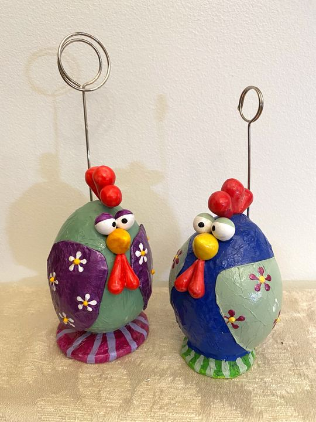
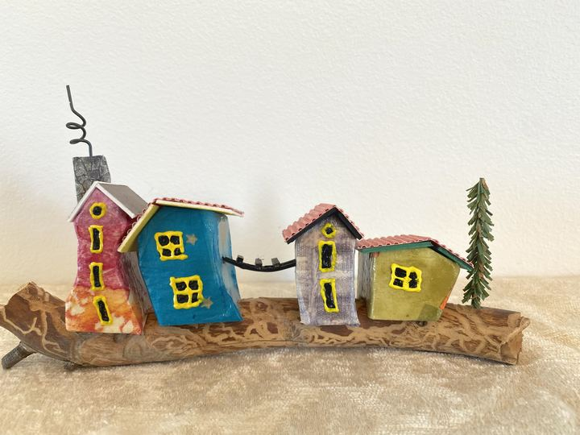
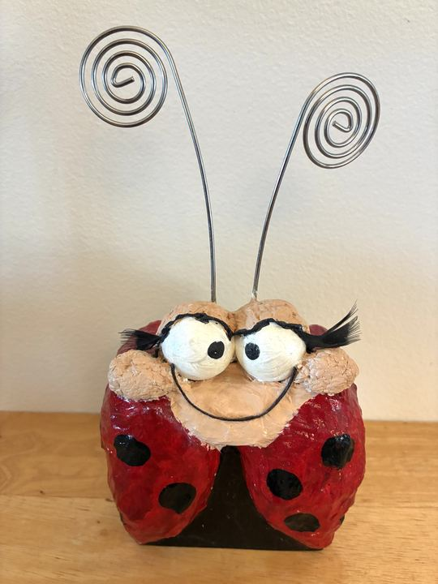
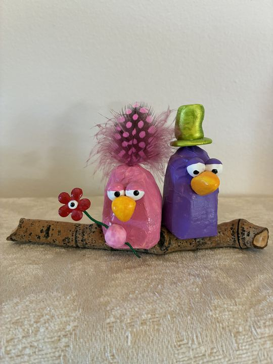
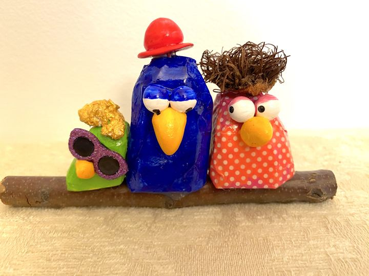
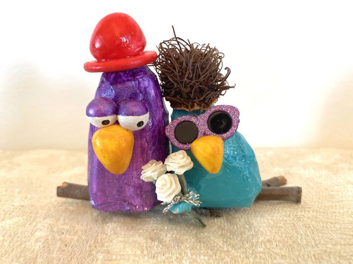
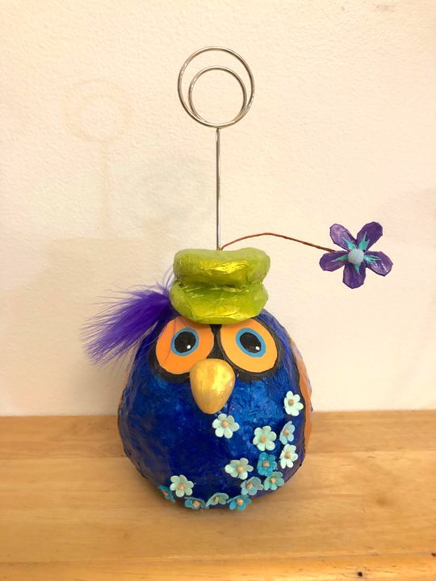
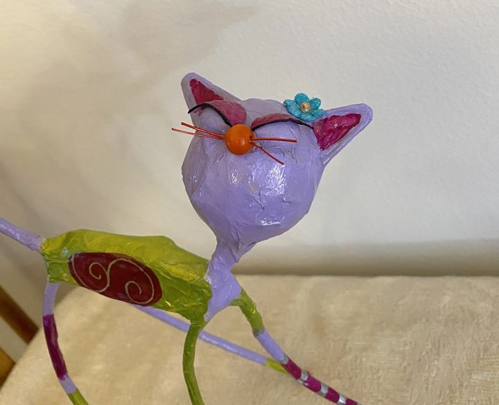

Gallery / Animals & Photo Holders
Animals & Photo Holders
Birds, owls, cats, dogs and cheerful photo holders — small critters with big personalities.

















Love one of these? Most pieces are one-of-a-kind, but I’m happy to create something similar just for you.
Ask about a commission